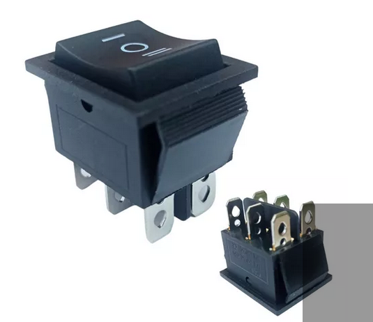
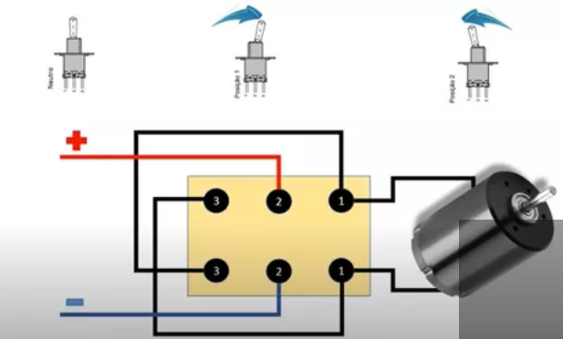

Um motor DC (Direct current) é um tipo de máquinas elétricas que converte energia elétrica de corrente contínua em energia mecânica.
Os tipos mais comuns dependem das forças produzidas por campos magnéticos.Tensão de funcionamento: 3 a 6 V.
Para uso deste tipo de motor usamos o conceito de polaridade onde a ligação
do fios é baseada nos conectores da fonte de energia sendo um positivo e o outro negativo,
este motor em especial é inversível isso faz com que se invertemos o negativo e positivo
teremos o ratação contrária
Para fazer este controle precisaremos de usar um inturruptor inverte polaridade, para que
possamos com apenas 2 fios cada motor obter os dois movimento, para frente e para trás.

Acompanha abaixo o esquema elétrico que possibilita este interruptor fazer a inversão

Como usaremos motores com tensão de 3 a 6v, precisamos também de um suporte para 4 pilhas
em série onde somará a tensão das 4 pilhas, dando os 6v que precisamos.
Agora basta construir um prototipo para anexar os motores e controle, veja exemplos no video abaixo: